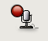
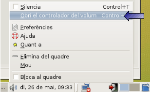
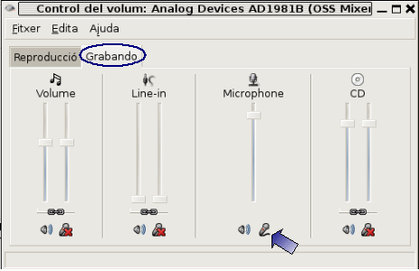

2.3. Grabador de sonido
Temporalización: 30 minutos
Para grabar la voz vamos a utilizar el programa Grabador de sonido

Aplicaciones / Sonido y video / Grabador de sonido
Su funcionamiento es muy intuitivo, con los botones típicos de este tipo de aplicaciones:
Hacer una nueva grabación(1), abrir una grabación existente(2), guardar una grabación(3), hacer una grabación(4), reproducir una grabación(5), parar de realizar una grabación o parar la reproducción de una grabación(6).
Para seleccionar el dispositivo desde el que se realizarà la grabación se utiliza la barra desplegable de los dispositivos de grabación(7) y el formato en que se guardarà el fichero se selecciona a través de la barra despleglable de los formatos de fichero(8).
Ante de empezar la grabación hay que comprobar que se ha seleccionado correctamente el dispositivo del que se realizará la grabación por medio del administrador de volumen:
Menú Archivo / Abrir Control de Volumen
o ejecutando desde una consola la orden:
gnome-volume-control
o con el botón derecho del ratón sobre el icono del altavoz de la barra inferior de la pantalla i seleccionar la opción Abrir controlador de volumen


Para realizar una grabación hay que hacer:
- Hacer clic sobre el botón Nuevo(1). Por defecto es la opción cuando se entra en el programa.
- Seleccionar el dispositivo desde el que se realizará la grabación(7) - el micrófono -.
- Seleccionar el formato del archivo que se generará(8) - wav-.
- Preparar el micro.
- Hacer clic sobre el botón Grabar (4).
- Para terminar la grabación hacer clci sobre el botón Parar(6).
- Guardar el archivo con el botón correspondiente (3) o a través del menú Archivo / Guardar como.
- Si se reproducir el archivo guardado hacer clic sobre el botón Reproducir(5).
Este artículo está licenciado bajo Creative Commons Attribution-NonCommercial 2.5 License
Formació del Professorat - CEFIRE